福岡県篠栗町。
このサイトでも過去に紹介させていただいているが、九州を代表する民間信仰のるつぼである。
そんな篠栗町に久し振りに行ってみることにした。
過去に訪問したあれやこれやをパトロールしつつ、お目当ては町の外れにあるコンクリ仏。
飯塚市との市町境にも近い郷之原にそのお方はいらっしゃる。
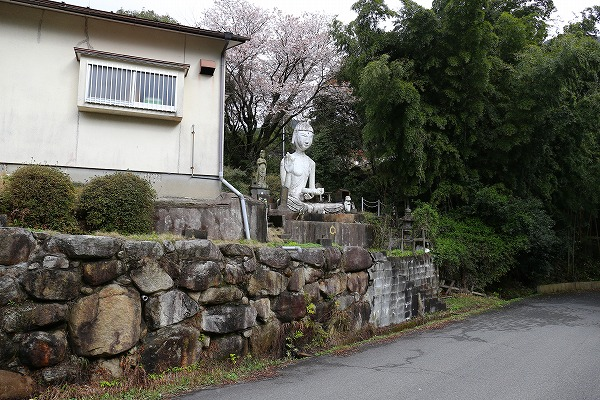
ごく普通の住宅の庭先のようなところにポツンと座っていた。
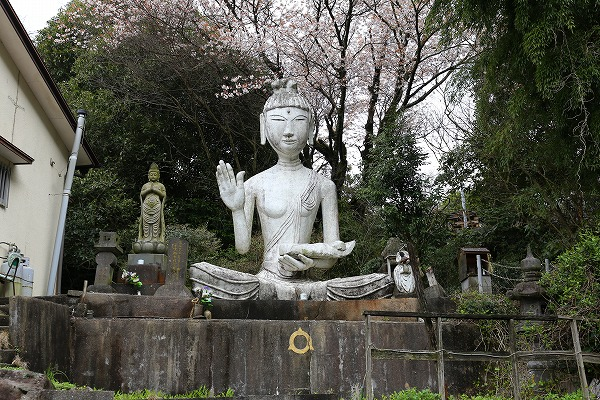
如何ですか、この雄姿。
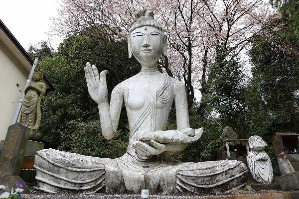
サイズ的には大仏、とは言えないがそれでもなかなかのサイズ。
奈良興福寺の阿修羅像を彷彿とさせる細長い腕、特徴的すぎます！
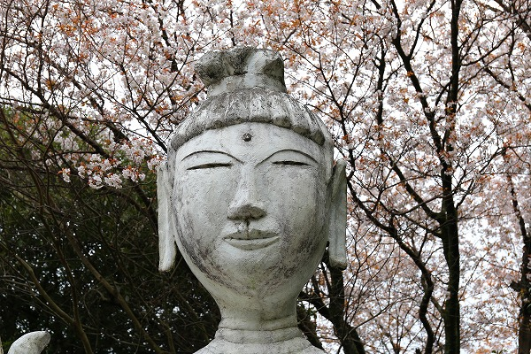
身体に対して大振りの御尊顔も…吉田戦車のマンガに出てきそう。
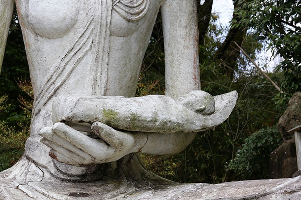
左手に赤子を抱いている。子安観音、なのかな。
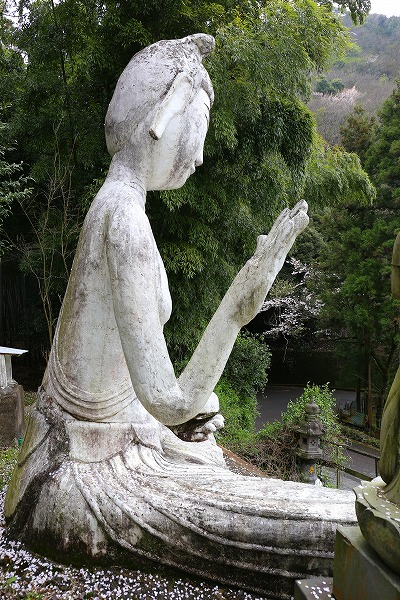
法隆寺の百済観音を彷彿とさせるプロポーション、カッコよすぎるぜ。
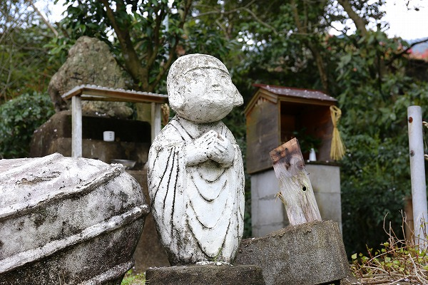
傍らには小さな子供の像が。
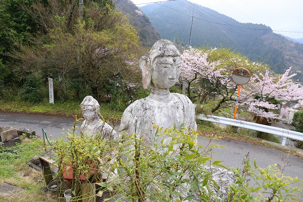
敷地内には更に2体のコンクリ仏が。
こちらの御方も独特の味わいがある。
これだけ寺院が多い篠栗においてこれだけの仏像を擁し、なおかつ寺名を名乗らないとはこれいかに。
個人が作ったインディーズの仏像なのだろうか。
大いなる謎を残したまま先へと進む。
しばらくするとこんな看板が
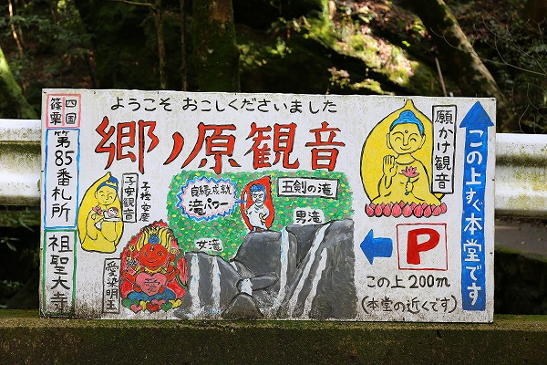
何だ。このトゥーマッチにキュートな看板は！
四国八十八か所の写し霊場である篠栗四国霊場の85番の札所なのにー。
これまでも篠栗霊場の寺をいくつか紹介してきたが、これほど敷居の低い看板は見たことがないぞ。
いいのかこれで。85番。
良縁成就滝パワーとか書いちゃってるし。
一体何なんだここは？
これは行ってみるしかない！
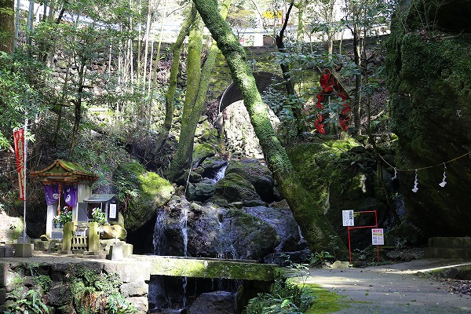
看板のすぐ裏には滝があり、不動明王が祀られている。
篠栗の霊場では比較的よく見かける光景だ。
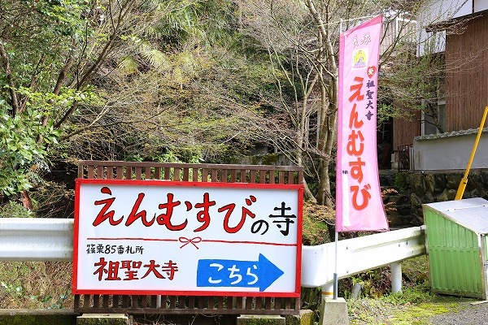
ところがハードな滝行場の雰囲気には場違いなカワイイ看板がこっちこっちと誘ってくれるのだ。
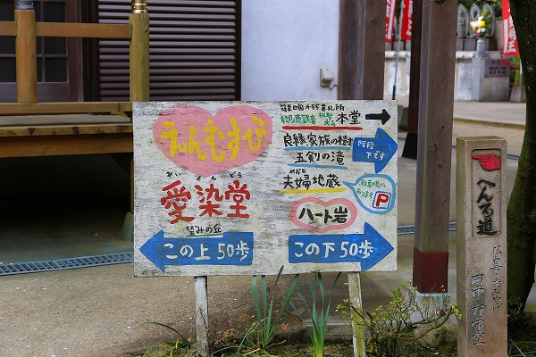
えんむすび、ハート岩、望みの丘…うむー。
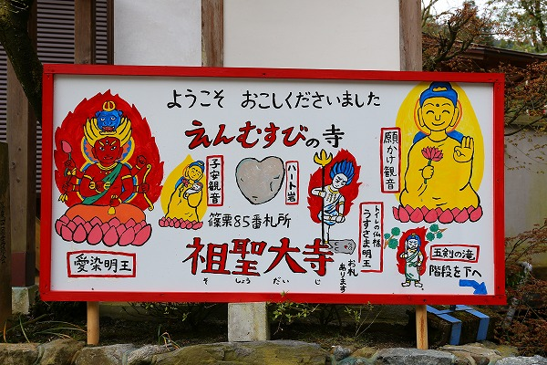
滝と縁結びがどのように同居しているのかがイマイチよくわからないなあ。
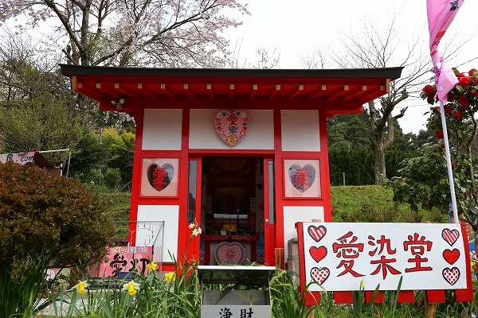
などと思っているうちに現れるのがこんな建物。
愛染堂だそうで。
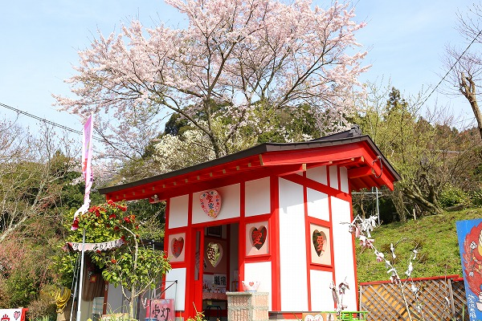
ハートの扁額、ハートの窓、おまけに見上げればピンク色に染まった満開の桜。
なんてキューティーなお堂なんでしょう…。
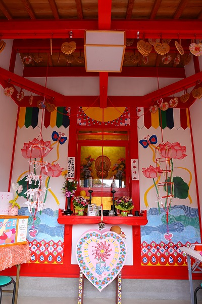
内部はこんな。
ファンシーですなー。
内部のイラストは先ほどの看板群とはまた違う芸風で明らかにお上手。
女子力高めのお堂と相成っている。
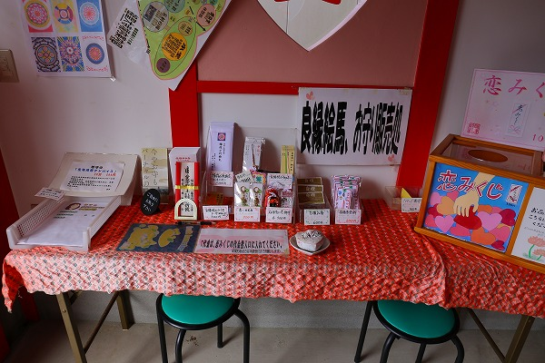
もちろん良縁祈願のグッズもぬかりないです。
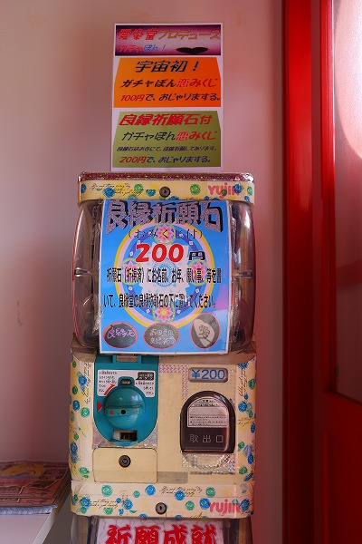
ガチャポンみくじ。
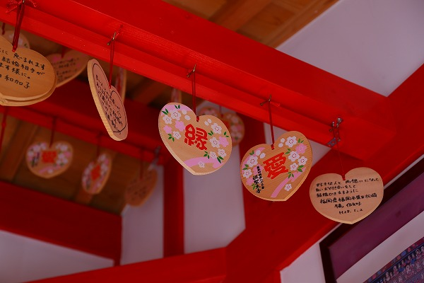
絵馬ももちろんハート型。
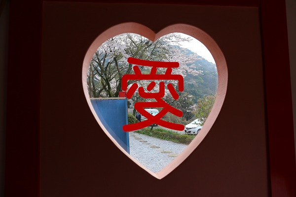
窓には「愛」！
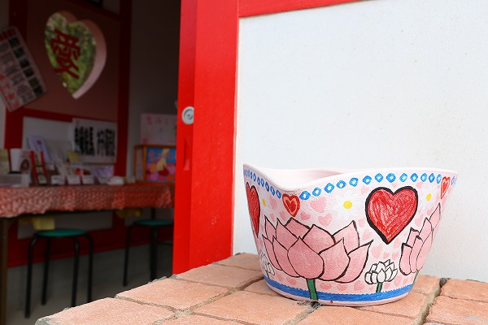
このようなお寺があってもいいと思うが、個人的な感想を述べさせていただけるならば、やっぱり恥ずかしー！！
いや、他に誰もいなければそれなりに楽しめるのだが、後から女子三人組とかがやってきて結構マジでお参りしてたので、もう場違いなおっさんが紛れ込んでてスミマセン的な状態なわけですよ。
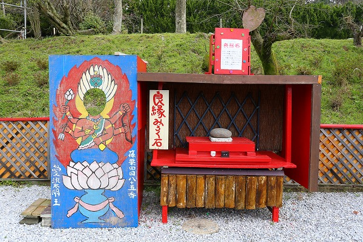
愛染堂の脇には愛染明王の顔出し看板と触ると良縁的な石があった。
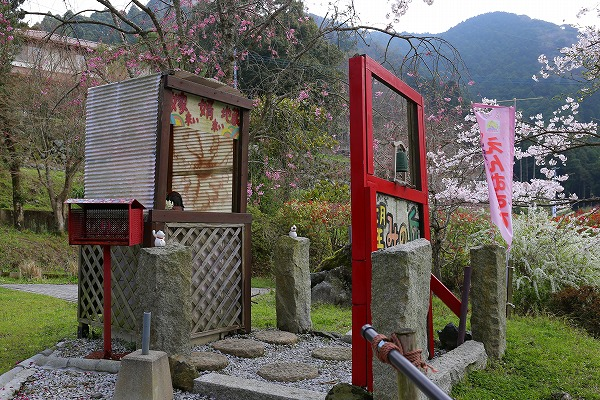
その先は少し小高い丘があり、自作っぽい祠のようなものが。
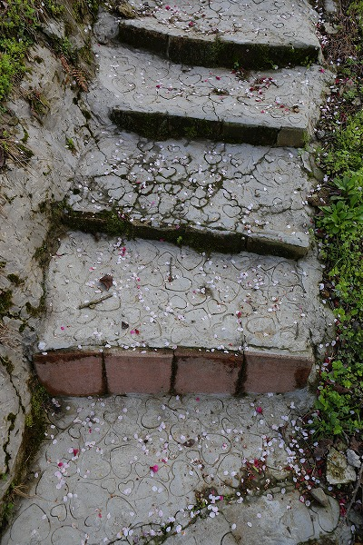
あ、階段もハートマークだ。
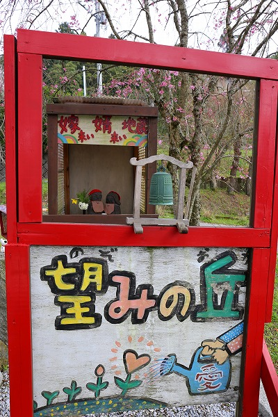
望みの丘。
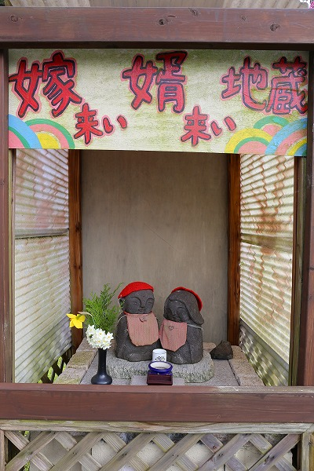
祠には小さなお地蔵さんが2体並んでいた。
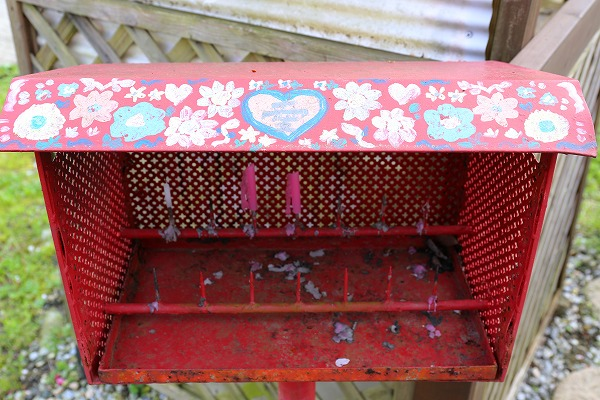
ろうそく立てもファンシー。
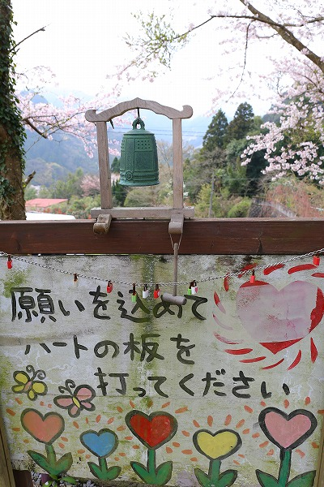
この辺の絵心の緩さは愛染堂の内部のイラストを描いた人物ではなく、ここに来るまで散々目にした看板の作者だろう。
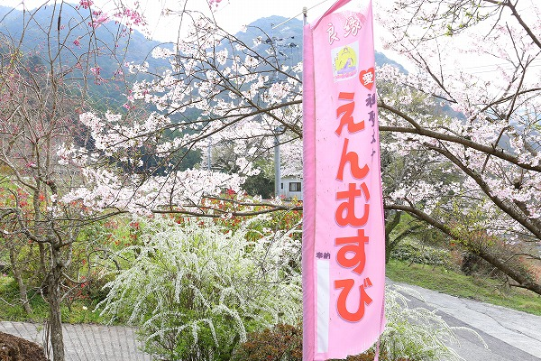
しかしこれほどまでに真正面にファンシー路線を貫いた寺もなかなかあるまい。
その意味においては潔さを褒めたたえるべきであろう。
でも
やっぱ恥ずかしぃー！
愛染堂の手前に本堂があった。
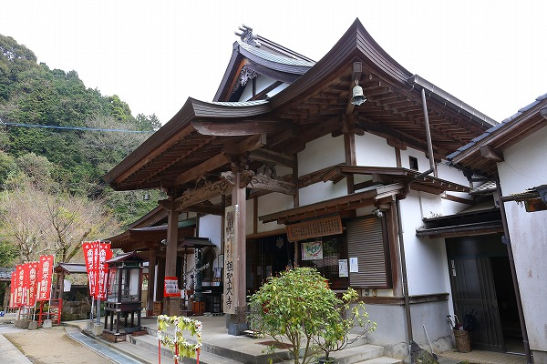
お寺の名前は祖聖大寺。
こちらはいたって正統派、というかごく普通のお寺だった。
本堂までファンシーだったらどうしようとドキドキしたが杞憂であった。
この寺に来て初めて心静かに参拝させていただきました。
最初に見た滝行の行場を見ようと先ほど来た道を引き返す。
ん？なんだこりゃ。
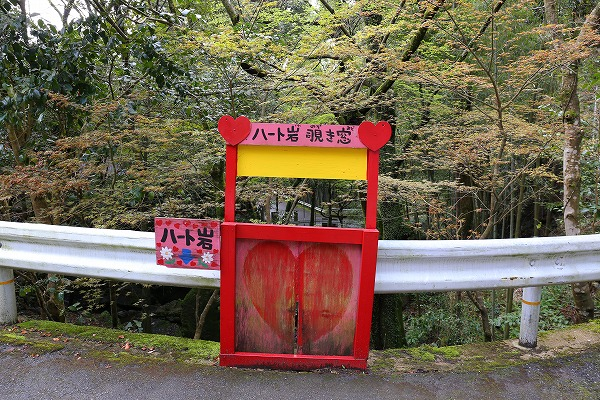
ハート岩覗き窓？ハート岩？
見下ろすと、ああ納得。
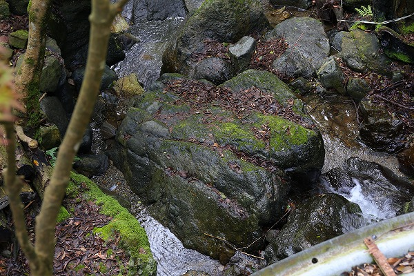
ハート型の岩があるのだ。
えんむすびの寺としてはこの上ないアイテムだね。
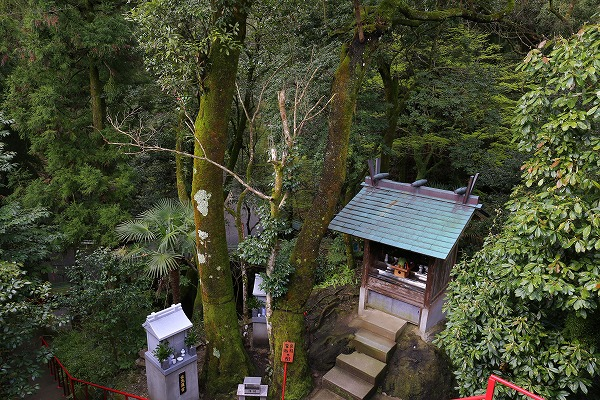
滝周辺には祠や社があり、いかにも真言系の山岳霊場らしい雰囲気に満ちている。
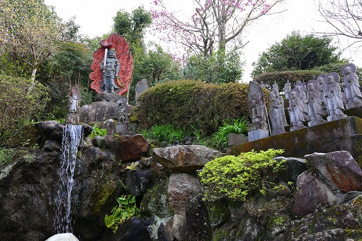
散々ファンシーだプリティだと言ってはみたものの、やはり行場周辺はキリっとした空気に満ちている。
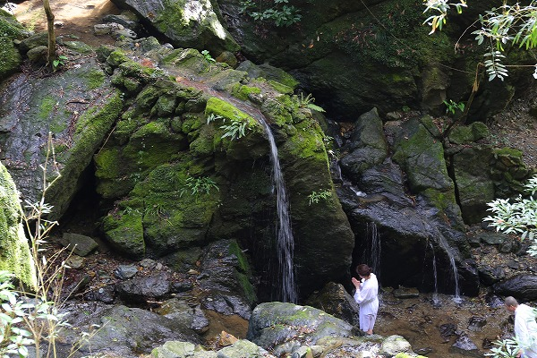
滝行をする人たちがいた。
小春日和とはいえ滝に打たれるにはまだまだ寒い季節だろうに。
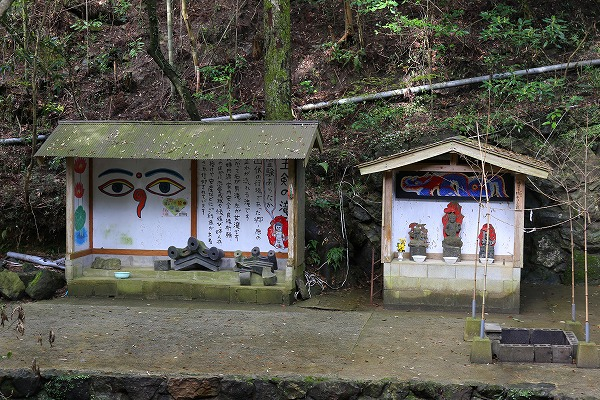
行場の側にはこんな祠が。
やはり元々は山伏の行場だったという。
男滝と女滝があることから夫婦円満や縁結びの御利益があると信仰されている、とある。
つまりこの寺は元々縁結びの寺であったのだ。
それが近年になってより強化された、という塩梅なのだろう。
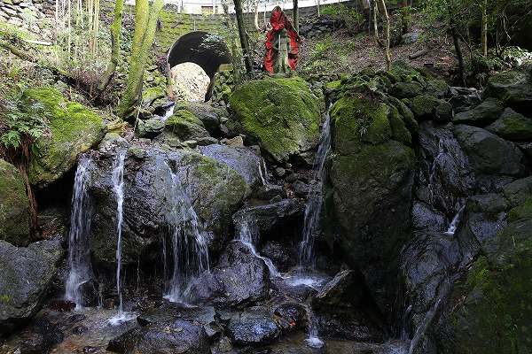
右が男滝、左が女滝。
五剣の滝と呼ばれている。
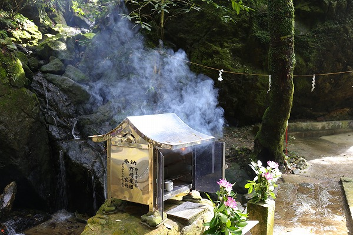
滝行をされていた方が参拝をしていた。
線香の煙がまるで生き物のように薄暗い谷底からゆっくりと上へ上へと昇っていくのをしばらく眺めていた。